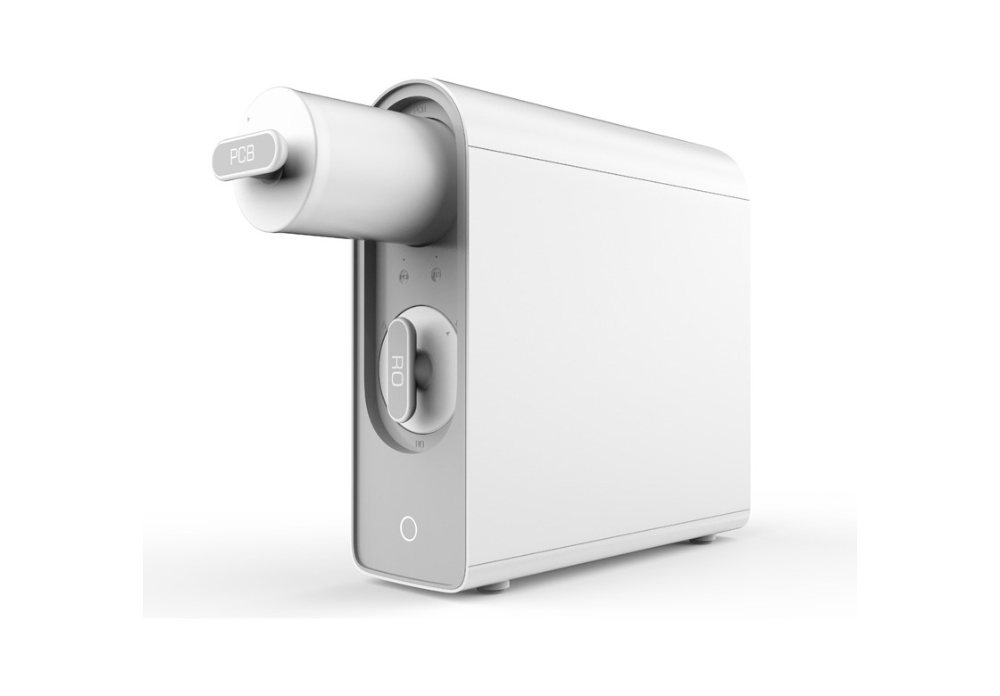
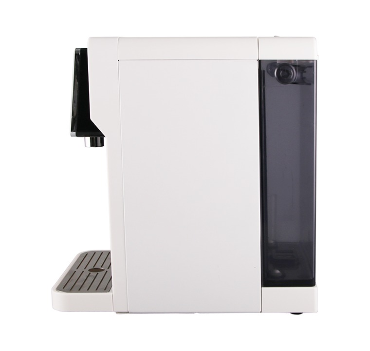
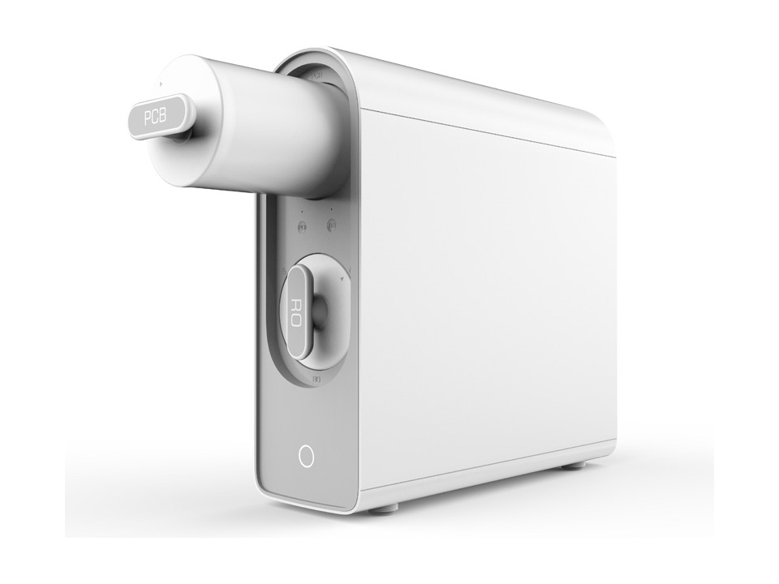
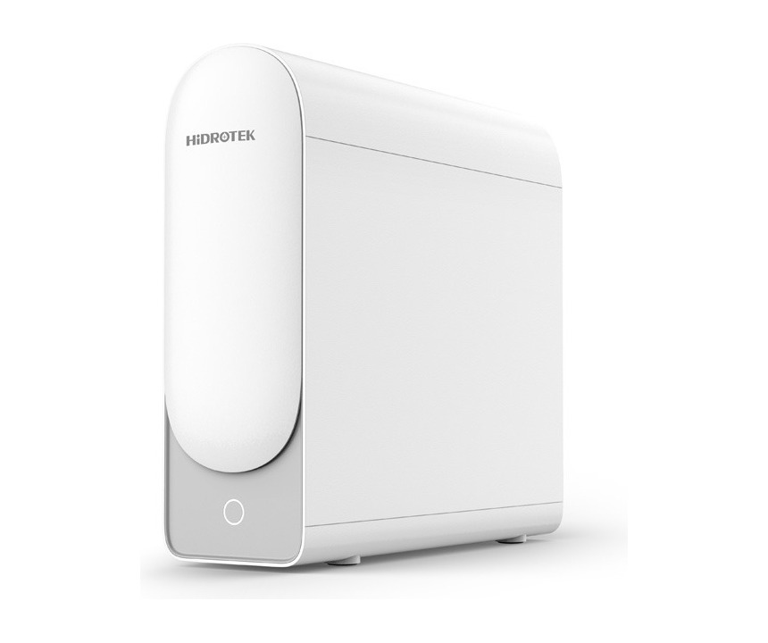
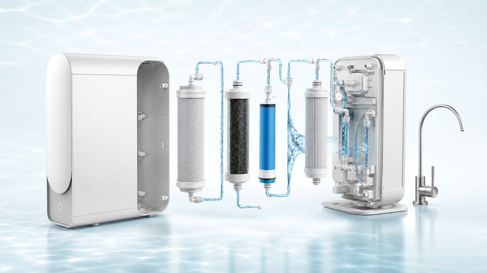

Gasto recurrente
Suben, se terminan y hay que pedir más. El abono mensual ordena ese costo.
Purificadores por suscripción mensual
Instalamos el purificador Hidrotek ideal para tu fuente de agua y nos ocupamos del mantenimiento. Reducí cloro, sedimentos, dureza, arsénico y sólidos disueltos sin cargar peso ni depender del reparto.


Compará antes de seguir comprando
Con Hidrotack cambiás compras repetidas por un abono mensual con equipo, instalación coordinada y mantenimiento programado. El ahorro real depende de tu consumo, pero la comodidad se nota desde el primer día.
Suben, se terminan y hay que pedir más. El abono mensual ordena ese costo.
Sin stock en casa, sin levantar peso y sin esperar entregas para tomar agua.
Filtrás directamente en tu cocina, justo antes de tomar, cocinar o preparar alimentos.
Ejemplo orientativo
Ese consumo también implica envases, pedidos, espacio ocupado y esfuerzo físico. Con un purificador instalado, el agua sale del grifo dedicado cuando la necesitás.
Diagnóstico por tipo de agua
Primero entendemos de dónde viene tu agua y qué problema querés resolver. Después recomendamos carbón activado, sobremesada u ósmosis inversa.

Plan recomendado
Para pozo, agua con dureza, arsénico o exceso de sólidos disueltos.
CotizarRed con cloro u olor
Opción rápida para mejorar sabor, olor y sedimentos sin obra compleja.
Cotizar
Abono mensual
Instalación coordinada, cambios programados y soporte dentro del servicio.
Ver planPromociones de suscripción
Las promos están pensadas para pasar de compra repetida a servicio mensual: equipo instalado, mantenimiento incluido y agua disponible en tu cocina.
Para probar el servicio
Instalación bonificada
Más elegido
Ósmosis inversa bajo mesada
Cambio de filtros incluido
Para familias o alto consumo
Prioridad técnica
Promociones sujetas a cobertura, instalación y diagnóstico del punto de agua.
Agua de pozo, red municipal o barrio privado
En muchas zonas el problema no es solo el sabor: también aparecen dureza, sólidos disueltos, arsénico o falta de análisis recientes. Hidrotack asesora por localidad y fuente de agua antes de instalar.
Consultar coberturaDesarme del filtro
El equipo combina etapas que atacan problemas distintos: sedimentos, cloro, olor, sabor, sales y sólidos disueltos. Por eso el mantenimiento programado es parte del servicio, no un extra escondido.

Retiene partículas y sedimentos antes de la membrana.
Ayuda a mejorar olor y sabor, reduciendo cloro.
El corazón del sistema para reducir sólidos disueltos.
Último pulido antes del grifo de agua purificada.
Por qué elegir Hidrotack
Cómo funciona
Contanos si usás red, pozo, bomba o agua municipal y cuánto consumís.
Coordinamos la visita técnica y dejamos grifo, equipo y conexiones listos.
Tenés agua filtrada en tu cocina sin comprar ni cargar bidones.
Programamos filtros y revisiones para que el sistema siga rindiendo.
Certificaciones declaradas
El fabricante declara estándares y certificaciones para sus productos según modelo. En Hidrotack destacamos la membrana de ósmosis inversa con respaldo NSF, junto con equipos y componentes con CE, RoHS / CB e ISO 14001.
Respaldo clave para el sistema principal de ósmosis inversa.
Marcado declarado por el fabricante según modelo.
Control aplicable a materiales y partes eléctricas según versión.
Estándar del fabricante alineado con el enfoque sustentable.
Preguntas frecuentes
Es un proceso que usa una membrana especial para separar gran parte de las sales, minerales y sustancias no deseadas del agua.
Sí. El abono contempla mantenimiento programado y cambio de filtros dos veces al año, según especificaciones del fabricante y uso del equipo.
La ósmosis inversa puede reducir significativamente arsénico y sólidos disueltos. Recomendamos validar cada caso con asesoramiento y análisis de agua.
No. La propuesta es de alquiler mensual: instalación, uso del equipo y mantenimiento programado dentro de un abono fijo.
Te preguntamos fuente de agua, localidad, consumo y problema principal: sabor, cloro, sarro, arsénico, pozo o falta de análisis recientes.
En hogares con consumo constante, la suscripción suele ordenar el gasto y elimina costos invisibles: transporte, envases, espacio y esfuerzo.
Solicitá asesoramiento
Decinos cuántos bidones comprás por mes, tu localidad y si tu agua viene de red, pozo o bomba. Te respondemos con equipo recomendado y próximos pasos.